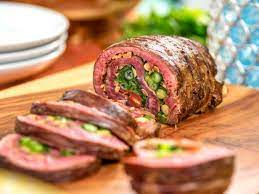

Meat Rolls

Description
Ingredients
- 2 eggs, beaten
- ½ cup tomato juice
- ¾ cup soft bread crumbs
- 2 tablespoons snipped fresh parsley
- ½ teaspoon dried oregano, crushed
- ¼ teaspoon sea salt
- ¼ teaspoon ground black pepper
- 1 clove garlic, minced
- 2 pounds lean ground beef
- 1 (6 ounce) package thinly sliced ham
- 1 (6 ounce) package sliced mozzarella cheese
Steps
- In a large bowl, combine eggs and tomato juice. Stir in the bread crumbs, parsley, oregano, salt, pepper, garlic and ground beef. Mix thoroughly. Preheat oven to 350 degrees F (175 degrees C).
- On a piece of foil or waxed paper, pat and shape meat into a 10x8 inch rectangle. Arrange ham slices on top of meat, leaving a small margin around edges. Tear up the cheese slices, reserving 1 slice whole, and sprinkle over the ham.
- Starting from the short end, carefully roll up meat, using the foil or waxed paper to lift. Seal the edges and ends of the meat. Place roll, seam side down, in a 9x13 inch baking dish.
- Bake in a preheated oven for about 75 minutes. Cut the reserved slice of cheese into 4 triangles. Overlap the triangles on top of loaf. Bake for another 2 minutes or until cheese melts.